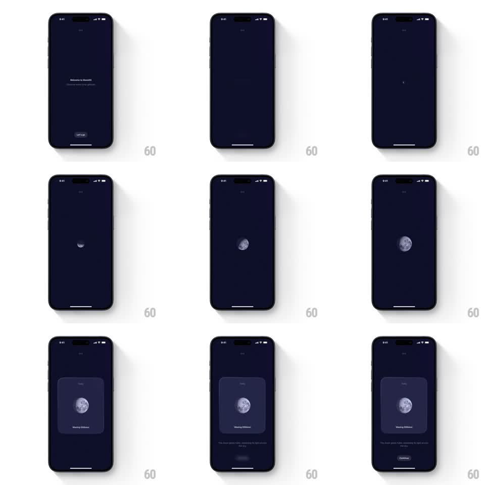

Media
Frame-by-frame

Rebuild this animation 1:1: Moonlitt's intro - after "Let's go", a detailed moon illustration springs from a tiny crescent to full size, then a glass card fades in behind it with the phase name and a Continue button.

Rebuild this animation 1:1: Moonlitt's intro - after "Let's go", a detailed moon illustration springs from a tiny crescent to full size, then a glass card fades in behind it with the phase name and a Continue button.
## Integration
Integration: stack-agnostic spec - springs given as stiffness/damping, timed motions as duration + curve; map every value to your framework and animation library of choice.
## Scene
Dark navy welcome screen ("Welcome to Moonlitt", "Let's go" button). On tap: the copy clears and a small moon appears at center, growing into a large detailed moon (waxing gibbous, crater texture). A rounded card materializes behind/below it: the moon sits in the card's upper half, "Waxing Gibbous" label beneath, subcopy "The moon grows fuller, spreading its light across the sky", and a "Continue" button at the bottom.
## Motion spec
Pattern: spring scale-in with staggered card reveal.
- Tap "Let's go": welcome copy fades and slides up 10pt (250ms); a pinpoint glow appears at center (100ms).
- The moon scales from 0.15 -> 1.0 (spring ~240/14, 700ms) with a visible overshoot (~1.06), its phase shading sweeping from crescent to the current phase as it grows.
- A soft halo blooms behind the moon (radius 0 -> 60pt, opacity 0.5, 500ms, starting at 60% through the scale).
- The card fades in and rises 20pt (400ms, ease-out), the moon settling into the card's top area; the phase label types/fades in (250ms), then subcopy (200ms), then the Continue button pops (scale 0.9 -> 1, spring ~340/16).
- The whole composition idles with the halo breathing (opacity 0.4 -> 0.6, 3s).
## Calibration
- The moon's growth is the hero beat - nothing else moves until it lands.
- Card is translucent dark glass (blur + 12% white), corners ~24pt.
## Reduced motion
Moon fades in at full size (300ms); card follows (250ms).
## Don't miss
- The phase sweep during scale ties growth to the moon metaphor - a static texture scaling up loses it.
- Continue is the only actionable element; it waits for the full sequence before enabling.